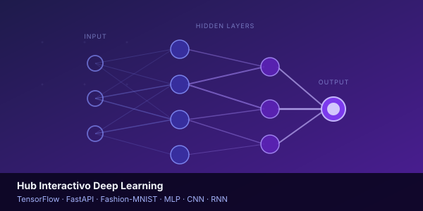
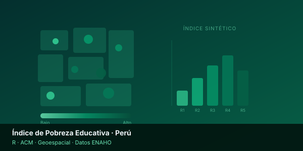
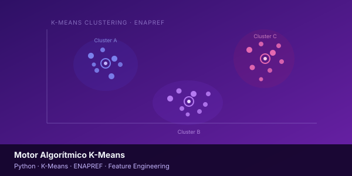
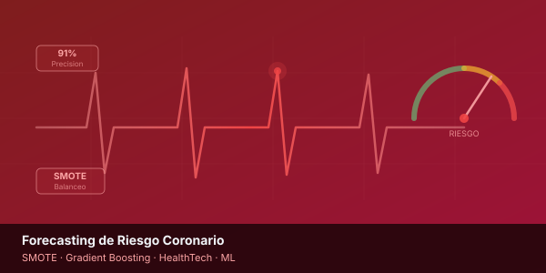

ConcluídoHub Interactivo Deep Learning
API en FastAPI que sirve modelos profundos (MLP, CNN, RNN) sobre Fashion-MNIST. Lienzo web de inferencia en tiempo real con visualización de matrices de confusión y heatmaps de activación.
|
Estudiante de Estadística en UNMSM (9no semestre, Décimo Superior) y Becario PRONABEC. Practicante en el BCP y participante del programa de Data Science del Matsuo Lab · Universidad de Tokyo. Transformo datos en decisiones con ML, IA Generativa y Analítica Avanzada.
Soy estudiante de Estadística en la Universidad Nacional Mayor de San Marcos (9no semestre, Décimo Superior), Becario PRONABEC por alto rendimiento académico. Cuento con experiencia en analítica avanzada e inteligencia artificial aplicada al sector financiero dentro del Banco de Crédito del Perú (BCP).
Actualmente participo en el programa de Data Science del Matsuo Institute · Universidad de Tokyo, uno de los laboratorios de IA más influyentes del mundo liderado por el Prof. Yutaka Matsuo. Soy egresado del Samsung Innovation Campus en Big Data & Artificial Intelligence.
Mi pasión está en transformar datos complejos en narrativas claras y soluciones con impacto real, combinando ML, Deep Learning, NLP e IA Generativa con visión estratégica de negocio.
Diseño y despliegue de modelos predictivos, clasificación, regresión y forecasting orientados a decisiones estratégicas de negocio.
Soluciones con LLMs, procesamiento de lenguaje natural, IA Generativa, OCR avanzado y análisis inteligente de documentos.
Construcción de pipelines de datos, integración con Databricks/PySpark, arquitecturas cloud y automatización de procesos.
Dashboards estratégicos en Power BI, análisis de KPIs, inteligencia de negocio y modelos estadísticos para toma de decisiones.
Tecnologías y herramientas con las que trabajo a diario
Matsuo Institute · Universidad de Tokyo, Japón
Seleccionado para el programa del Prof. Yutaka Matsuo, referente mundial en IA. Especialización en Deep Learning, LLMs y soluciones de frontera tecnológica.
Universidad Nacional Mayor de San Marcos
9no semestre. Décimo Superior. Becario PRONABEC — Beca Permanencia por alto rendimiento académico.
Samsung Innovation Campus
Formación intensiva en Big Data, Machine Learning y análisis de datos aplicados a inteligencia artificial.
Universidad Nacional Mayor de San Marcos
Fundamentos de analítica de negocios, visualización de datos y toma de decisiones basada en datos.
Banco de Crédito del Perú (BCP) · COE Advanced Analytics
Nexo estratégico entre equipos técnicos de datos y unidades de negocio. Destilo modelos e insights complejos en narrativas claras y decisiones accionables.
Banco de Crédito del Perú (BCP)
Implementé IA Generativa y Computer Vision (OCR avanzado) logrando 91% de precisión en extracción de datos. Desplegué modelos NLP y ML en producción.
PRESTAMYPE
Construí pipelines ETL, dashboards Power BI para KPIs de cartera crediticia y automaticé reportes financieros con Python, generando ahorros significativos de tiempo.
GREMO – Inteligencia de Negocios y Mercados
Lideré estudios de mercado y opinión pública con equipos multidisciplinarios, aplicando metodología estadística rigurosa a investigaciones cuantitativas y cualitativas.
Arquitecturas predictivas y soluciones de alto impacto

ConcluídoAPI en FastAPI que sirve modelos profundos (MLP, CNN, RNN) sobre Fashion-MNIST. Lienzo web de inferencia en tiempo real con visualización de matrices de confusión y heatmaps de activación.

ConcluídoAnálisis de Correspondencias Múltiples sobre millones de registros de hogares peruanos. Dashboard con mapas de brechas territoriales para orientar políticas públicas basadas en evidencia.

ConcluídoFeature Engineering sobre la matriz ENAPREF combinado con K-Means no supervisado para segmentar mercados de Lima Norte. Perfiles de consumo diferenciados para inteligencia comercial.

ConcluídoPipeline completo de ML (SMOTE + Gradient Boosting) sobre historiales clínicos para modelos de alerta temprana cardíaca. Infraestructura lista para integración en startups de HealthTech.
Formación continua y especialización técnica verificable
Abierto a proyectos desafiantes, colaboraciones y oportunidades
Si tienes un proyecto de datos, una idea con IA o simplemente quieres conectar, estoy a un mensaje de distancia.